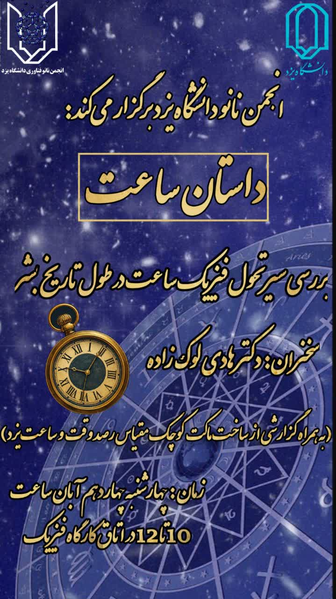

پوستر رویداد
داستان ساعت

داستان ساعت

به صورت خودکار تغییر میکند
داستان ساعت
در کارگاهی جذاب و آموزنده با عنوان «داستان ساعت»، که به همت انجمن علمی نانو برگزار شد، دکتر هادی لوکزاده به عنوان سخنران اصلی به بررسی تاریخچه، ساختار و فناوریهای نوین در طراحی ساعتها پرداخت. ایشان در ابتدای سخنرانی با نگاهی تاریخی به تحول ساعتها از ابزارهای ابتدایی سنجش زمان تا ساعتهای هوشمند امروزی، مخاطبان را با سیر تکامل این ابزار حیاتی آشنا کردند. سپس به نقش فناوری نانو در بهبود عملکرد و دقت ساعتها اشاره کردند و نمونههایی از کاربردهای نانومواد در ساخت قطعات داخلی ساعتها را معرفی نمودند. در بخش پایانی، دکتر لوکزاده به پرسشهای شرکتکنندگان پاسخ داد و با ارائه دیدگاههایی درباره آینده ساعتها در عصر دیجیتال، فضای گفتوگویی پویا و علمی را رقم زد. ✔️این کارگاه با حضور اساتید برجسته دانشگاه یزد و استقبال خوب اعضای انجمن و علاقهمندان به فناوریهای نو همراه بود و فرصتی ارزشمند برای آشنایی با پیوند میان علم زمانسنجی و فناوری نانو فراهم آورد..